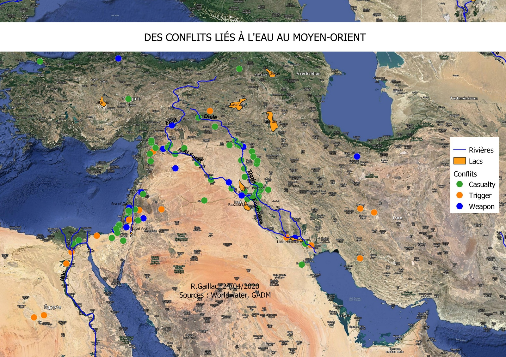
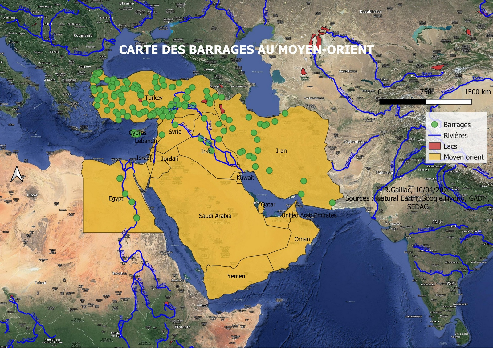

Le partage des eaux entre les pays peut donc engendrer la naissance de conflits entre ceux-ci. Ce partage est d’autant plus compliqué dans les pays où frappe la sécheresse et l’aridité. La rareté de l’eau entraîne donc inévitablement des affrontements armés ou violents, qui seront d’autant plus fréquents avec la problématique de la croissance démographique. Le cas du Nil, fleuve d’Afrique, d’environ 6500 km, le plus long fleuve du monde, est traversé par 10 pays, ce qui rend le partage des eaux compliqué. Même s’il existe un accord entre les pays concernant le partage des eaux, cela n’empêche pas des tensions. En mai 2013, le gouvernement éthiopien a entamé des opérations de détournement du Nil bleu afin de permettre la construction d'un barrage hydroélectrique, ce qui a provoqué des tensions notamment en Égypte.
De nombreux conflits se sont produits à cause de l’eau dans le monde depuis 1903. Ils sont géoréférencés selon la nature du conflit (armé, pays déclencheur ou alors victime du conflit) dans la carte ci-dessous. On dénombre environ 900 conflits depuis 1903. Cependant, tous les conflits ne figurent certainement pas dans cette base de données.
La première guerre de l’eau du XXe siècle autour de l’eau douce s’est produite en Amérique Latine, plus particulièrement en Bolivie, contre la privatisation de l’eau dans la ville de Cochabamba en 2000. Ce fut la première révolte sociale, qui avait fait un mort et de nombreux blessés. En 2017, la Bolivie a décrété un État d’urgence nationale à cause des sécheresses. L’eau potable est rationnée dans les villes, les réservoirs sont presque vides et le deuxième plus grand lac du pays est à sec. Selon le journal le Guardian, les causes pourraient être dues au réchauffement climatique, mais également aux projets miniers, les plantations ou bien la déforestation qui auraient augmenté ce phénomène.
Parmi les conflits cités précédemment, il existe des conflits armés entre les pays. Selon la base de données de World Water, il s’est produit 131 conflits armés dans le monde depuis 1903. Ces conflits sont localisés sur la carte ci-dessous. La plupart d’entre eux se sont produits en Afrique, au Moyen-Orient et aux États-Unis. Sur la carte, on peut voir un conflit armé dans le Nord-Ouest de la France. Ce conflit a eu lieu en 1944, soit pendant la Seconde Guerre Mondiale, et a été provoqué par l’armée allemande. En effet, ils ont volontairement créé un lac en laissant inonder le fleuve Ay. Ce lac mesurait plusieurs kilomètres de large et deux mètres de profondeur, ce qui a considérablement ralenti l’avancée des soldats français sur le centre de communication allemand en Normandie.
L’eau est très utilisée dans l’industrie en particulier dans le secteur minier, qui utilise l’équivalent de la consommation annuelle domestique des États-Unis, et cela dans des régions très arides. Une grande quantité d’eau est également nécessaire pour l'extraction des énergies fossiles, comme le gaz de schiste qui sert à refroidir les centrales hydrauliques et nucléaires ; mais également pour les biocarburants.
Entre l’Inde et le Pakistan, la tension est palpable à cause du fleuve Indus. L’Inde fait pression sur le Pakistan en menaçant de fermer le robinet du fleuve Indus. Il existe cependant un traité de l’Indus, accord qui date de 1960 et qui organise le partage pacifique de l’eau du fleuve, mais le Gouvernement indien menace d’abroger ce traité. L’Indus traverse la Chine, l’Inde et le Pakistan avant de se jeter dans la Mer d’Arabie. Le fleuve est vital pour l’agriculture pakistanaise, son industrie ainsi que l’alimentation en eau potable des habitants. Cependant, l’Inde pourrait déclencher une guerre de l’eau régionale. En effet, la Chine pourrait rentrer dans ce conflit en coupant le débit du fleuve Brahmapoutre qui coule vers l’Inde.
Dans des régions comme celle du Moyen-Orient, la guerre de l’eau est omniprésente. Il existe une situation d'hydro gémonie, ce qui signifie qu’il y a appropriation d’une partie de la ressource au détriment d’autres riverains par l’État. De plus, la situation politique est déjà tendue dans cette région et il existe de nombreux conflits armés entre les pays notamment en Iraq.
Les principaux fleuves du Moyen-Orient sont le Nil (même s’il parcourt plus de kilomètres en Afrique), le Jourdain, le Tigre et l’Euphrate.
On dénombre environ 170 conflits liés à l’eau dans cette région.
La Turquie est considérée comme le château d’eau de l’Euphrate grâce à ses immenses montagnes. Le Tigre et l’Euphrate prennent tous les 2 leur source en Turquie, ils parcourent ensuite la Syrie (très peu pour le Tigre) et l’Irak avant de se jeter dans le golfe Persique. On peut dire que l’Iran appartient également au bassin fluvial du Tigre, car de nombreux affluents y prennent leur source. La principale part du débit des deux fleuves se constitue sur le territoire de la Turquie, car dans cette zone la pluviométrie est très forte contrairement au reste du bassin versant où elle est modeste. La Turquie est donc en situation d’hydro gémonie sur la Syrie et l’Irak, car elle peut contrôler son débit. La majorité des barrages se situent en Turquie. Et deuxièmement, de nombreux barrages se situent sur le Tigre et l’Euphrate, et la majorité d’entre eux sont également en Turquie. L’aménagement de barrages est nécessaire d’un point de vue agricole, car de nombreuses crues des fleuves interviennent au printemps issu de la fonte des neiges or il est trop tard pour les récoltes d’hiver et trop tôt pour les récoltes d’été.
Les débits du Tigre et de l’Euphrate selon les mois sont quasiment identiques. Pour le Tigre, ces données ont été relevées à Bagdad et pour l’Euphrate dans la ville de Hit, en Irak, à 150 km au Nord-Ouest de Bagdad (source Wikipédia). Leurs débits sont à peu près similaires, et ils connaissent des crues durant le printemps, ce qui comme dit précédemment, n’est pas vraiment utile à cette période de l’année, d’où la nécessité de construire des barrages pour retenir l’eau. Il était donc nécessaire pour l’agriculture de construire des barrages afin de régulariser le débit et le niveau d’eau des fleuves afin de mieux pouvoir les exploiter hors des périodes de crues. La deuxième fonction des barrages est de produire de l’électricité.
Dans les années 1980, la Turquie lance le projet GAP (Great Anatolian Project) qui consiste en la création de nombreux barrages hydro-électriques (22 barrages et de 19 centrales hydroélectriques) afin de diminuer la dépendance énergétique du pays. Cependant, cette décision a provoqué de vives tensions avec les pays voisins tels que la Syrie et l’Irak, car ils dénoncent une appropriation des ressources par Ankara, la capitale turque. La Syrie et l’Irak ont vu le débit des fleuves se réduire, ce qui a des conséquences sur l’irrigation et donc l’agriculture. De plus, ce projet crée des tensions internes, car il oblige un déplacement de populations kurdes. Des manifestations ont eu lieu par le biais du mouvement nommé “Stop Ilisu”, qui a pris une portée internationale, et qui a su provoquer le retrait de certains investisseurs par exemple La Société Générale française.
Dans le sud de l’Irak, Saddam Hussein a créé le “troisième fleuve” (Grand Canal). Il s’agit d’un canal pour permettre l’évacuation des eaux salées et polluées afin d’éviter de les rejeter dans les 2 fleuves alors qu’il vise l’assèchement des marais dans le sud du pays où vivent des populations chiites (dans la plupart sont des opposants au régime) afin de permettre un meilleur contrôle de l’espace.
Le Jourdain prend sa source dans les montagnes Libanaises, il traverse ensuite les lacs de Houlé et de Tibériade avant de se jeter dans la mer Morte. Le bassin du Jourdain est partagé entre l’Israël, la Jordanie, la Syrie, le Liban et la Palestine. Tous ces pays, à l’exception du Liban, sont en situation de manque absolu d’eau. La rareté des ressources en eau dans la région s’explique par les conditions naturelles locales (forte sécheresse) mais l’augmentation de la démographie est un facteur supplémentaire. Israël est dans une situation de stress hydrique, car on constate des précipitations inférieures à 300 m3/an. En 1959, ils commencent des travaux afin de détourner les eaux du lac Tibériade. La guerre des Six Jours est issue d’un conflit lié à l’eau, car leurs voisins débutaient des travaux de détournement du Jourdain. Durant cette Guerre, Israël a détruit les barrages syriens sur le Jourdain, car ils en diminuaient son débit. On constate donc la même situation que la Turquie pour l’Euphrate et le Tigre, car ils sont tous les 2 en situation d’hydro gémonie.
created with
Nicepage .